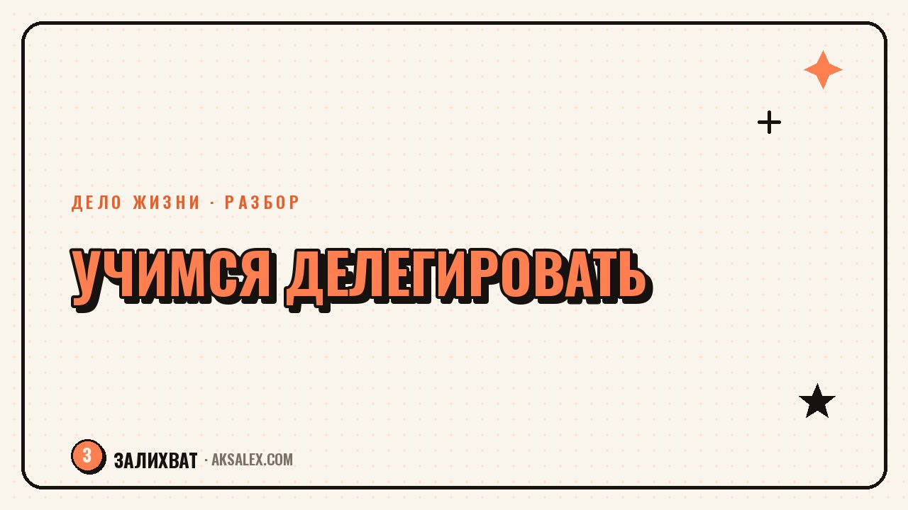

Как делегировать в своём деле, если делаешь всё сам

На старте своего дела делать всё самому - нормально: денег на помощников нет, а качество важнее скорости. Проблема начинается, когда дело растёт, а привычка держать каждую мелочь в своих руках остаётся прежней. Ты физически не можешь одновременно вести переговоры, отвечать клиентам, готовить материал и считать бухгалтерию - и либо выгораешь, либо дело перестаёт расти, потому что все процессы упираются в одного человека.
Почему страшно отдавать задачи другим
Чаще всего дело не в отсутствии подходящих людей, а в убеждении, что никто не сделает так же хорошо, как ты. Это убеждение частично верно для первого месяца, но мешает увидеть, что через два-три месяца практики человек выходит на твой уровень в узкой задаче, а ты за это время занимаешься тем, что приносит больше ценности.
Второй частый страх - потеря контроля: если задачу делает кто-то другой, трудно проверить результат без погружения в процесс целиком. Третий - денежный: платить помощнику, когда своих доходов едва хватает, выглядит риском. Все три разумны, но решаются не отказом от делегирования, а постепенным подходом.
Делегирование не означает отдать и забыть. Оно означает отдать задачу и построить способ проверять результат без твоего постоянного участия в процессе.
Как понять, что пора передавать задачи
Есть несколько надёжных сигналов. Первый - ты регулярно работаешь по вечерам и выходным не потому, что хочешь, а потому что иначе не успеваешь. Второй - есть задачи, которые ты выполняешь только потому, что умеешь, хотя они не требуют именно твоих уникальных навыков: оформление документов, базовая переписка, рутинная вёрстка.
Третий сигнал - упущенные возможности: клиент предложил проект, а ты отказался из-за нехватки времени. Если это происходит систематически, дело уже переросло режим одного человека, и дальнейший рост требует перераспределения задач.
Какие задачи отдавать первыми
- Повторяющиеся технические задачи без творческой составляющей - оформление, рассылки, базовая отчётность
- Задачи, где ошибка легко исправима и не ударит по репутации, пока ты учишь нового человека
- Задачи, которые тебе скучны и отнимают энергию, нужную на то, что действительно важно
С чего начать, если никогда не делегировал
Не нужно сразу нанимать штатного сотрудника - можно начать с разовой задачи у фрилансера или подрядчика на несколько часов в неделю. Выбери одну конкретную задачу, опиши результат, который хочешь получить, и дай человеку свободу в способе достижения, а не диктуй каждый шаг.
Первая передача задачи почти всегда идёт медленнее, чем если бы ты сделал её сам. Это нормальная цена обучения, а не признак того, что делегирование не работает - выигрыш появляется, когда человек делает задачу регулярно без твоего участия.
- Запиши короткую инструкцию с примерами, даже если кажется, что задача очевидна
- Договорись о конкретном сроке и формате проверки результата - а не о постоянном присутствии рядом
- Начни с задачи, где ошибка не критична, чтобы спокойно пройти первые шероховатости
Таблица: что отдать на старте, а что пока держать у себя
Делегирование не означает отдавать всё подряд. На старте есть задачи, где твоё личное участие ещё важно для репутации и качества, и задачи, которые можно безопасно передать с первого раза.
| Тип задачи | Отдавать на старте | Почему |
|---|---|---|
| Оформление документов, рассылки | Да | Низкий риск ошибки, легко проверить |
| Базовая переписка по шаблону | Да | Можно дать готовые скрипты ответов |
| Переговоры с ключевыми клиентами | Нет пока | Репутация и доверие строятся лично |
| Контроль качества финального продукта | Нет пока | Пока нет человека, который понимает твои критерии |
| Простые технические задачи | Да | Быстро обучаемо, легко проверяемо |
| Формирование стратегии и цен | Нет пока | Требует полной картины дела, которая есть только у тебя |
Что делать, если делегирование пошло не так
Первая неудачная передача задачи - обычное дело, а не повод вернуться к модели «всё сам». Разбери конкретно, что пошло не так: неточная инструкция, неподходящий человек для этой задачи, или ты вмешался слишком поздно.
Полезно отличать разовую ошибку исполнителя от системной проблемы. Если один человек один раз что-то не понял - это нормальная притирка. Если несколько разных людей на одной и той же задаче регулярно спотыкаются об один момент, вероятно, проблема в твоей постановке задачи, а не в исполнителях.
- После неудачи зафиксируй конкретный урок, а не общее «делегирование не работает»
- Пересмотри инструкцию с учётом вопросов, которые задавал человек
- Дай себе и исполнителю ещё одну попытку на похожей, но менее рискованной задаче
Частые вопросы
С какой задачи лучше начать делегирование, если я никогда этого не делал?
Начни с рутинной технической задачи без творческой составляющей и с низкой ценой ошибки - оформление документов, рассылка, базовая переписка по шаблону. Так ты потренируешься ставить задачу и проверять результат, не рискуя репутацией дела.
Как делегировать, если денег на помощника пока мало?
Можно начать с нескольких часов в неделю у фрилансера на одну конкретную задачу, а не с полной занятости. Многие исполнители работают проектно, и это дешевле, чем постоянный сотрудник, пока объём работы не вырос достаточно.
Как проверить результат, если я не хочу контролировать каждый шаг?
Договорись о чётких критериях готовой задачи заранее и проверяй финальный результат, а не промежуточный процесс. Это требует времени на формулировку критериев, но освобождает от постоянного наблюдения за работой человека.
Что делать, если я боюсь, что делегированная задача выйдет хуже, чем если бы я сделал сам?
На первых разах качество действительно может быть ниже - это нормальная цена обучения нового человека твоим стандартам. Выбирай для старта задачи, где временное снижение качества не критично для клиента или репутации.
Как понять, что пора нанять первого помощника в своё дело?
Главный сигнал - ты систематически отказываешься от возможностей или работаешь по вечерам и выходным не из желания, а из нехватки времени. Если это происходит не разово, а регулярно несколько месяцев подряд, дело уже переросло модель одного человека.
Раз тема оказалась полезной, вот что почитать следующим. Фото листа в нейросеть вместо гадания: что за растение, чего ему не хватает и когда следующий полив.
Читать статью →а не вручную